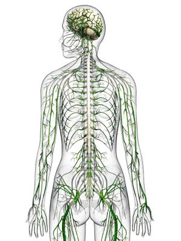
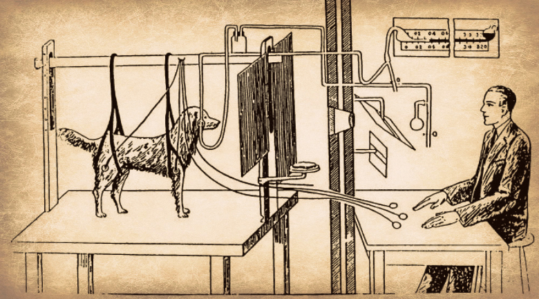

Svi nervi koji polaze iz mozga i kičmene moždine čine periferni nervni sistem. Ovaj dio nervnog sistema povezuje organe i organske sisteme i usklađuje rad svih organskih sistema. Periferni nervni sistem sadrži osjećajne, pokretačke i mješovite nerve; pripadaju mu i ganglije-nervni čvorovi koji su izgrađeni od tijela nervnih ćelija. U perifernom nervnom sistemu razlikujemo moždane (lobanjske) nerve i moždinske (kičmene) nerve.
|  |
Nervni sistem čovjeka |
Moždani (lobanjski) nervi dobili su ime po tome što su tijela njihovih nervnih ćelija nalaze u mozgu. Iz velikog mozga i moždanog stabla izlazi 12 pari moždanih nerava. Svaki nerv ima svoje ime, a označavaju se i rimskim brojevima od I do XII. Među njima ima senzitivnih, motornih i mješovitih nerava. Mirisni nerv pripada senzitivnim nervima. On sadrži samo senzitivna vlakna, kojima se nadražaji kreću od čulnih ćelija u nosu do centra u velikom mozgu. Nerv koji inerviše mišiće jezika je motorni nerv. Jezično-ždrijelni nerv je mješovit-sadrži i senzitivna i motorna vlakna. Ovaj nerv kontroliše pokrete mišića ždrijela i sprovodi osjećaje ukusa od jezika do velikog mozga.
Iz kičmene moždine polazi 31 par moždinskih (kičmenih) nerava. Moždinski nervi dobili su ime po tome što se tijela njihovih nervnih ćelija nalaze u kičmenoj moždini. Svi moždinski nervi su mješoviti, jer sadrže i motorna i senzitivna nervna vlakna. Motorna nervna vlakna polaze iz prednjih rogova sive mase, dok senzitivna vlakna ulaze u zadnje rogove. Moždinski nervi prolaze kroz međupršljenske otvore, a zatim se granajui formiraju spletove nerava koji dolaze do svakog dijela našeg tijela; kože, mišića, žlijezda i nekih unutrašnjih organa.
Ako slučajno rukom dodirnemo vreli predmet, ruku ćemo trgnuti prije nego što postanemo svjesni tog pokreta. Ovaj brzi pokret koji smo napravili bez kontrole volje, naziva se refleks. Refleks je brza reakcija organizma na draži. Kako se odvija refleksni pokret?
Specijalizovane nervne ćelije u koži, prijemnici ili receptori, prime draž i proizvedu nadražaj. Osjećajnim (senzitivnim) vlaknom nadražaj se prostire do centra refleksa, koji se nalazi u sivoj masi kičmene moždine. Odatle se nadražaj proizvodi pokretačkim (motornim) vlaknom do mišića, koji se kontrahuje i izvede pokret. Organ koji reaguje naziva se efektor. Istovremeno se senzitivnim vlaknom nadražaj provodi do mozga, gdje nastaje osjećaj bola. Put koji nadražaj pređe od receptora do centra u kičmenoj moždini , i zatim od centra do efektora, naziva se refleksni luk.
Mnogi životni procesi: kijanje, kašljanje, gutanje, treptanje, sisanje... odvijaju se refleksno, bez kontrole velikog mozga. Ovi refleksi su postojani, sa njima se rađamo i zovu se urođeni ili bezuslovni refleksi. Imaju veliki značaj u održavanju osnovnih životnih potreba i u zaštiti tijela.
Postoje refleksi koji se stvaraju tokom života, naučene reakcije koje zavise od iskustva. Zovu se stečeni ili uslovni refleksi. Kada hrana dospije u usnu duplju, izaziva lučenje pljuvačke, što predstavlja refleksnu radnju. Međutim, nekad je dovoljno samo da čujemo zveckanje kašike i počinje izlučivanje pljuvačke. To je stečeni refleks-tokom života smo naučili da je to zvuk koji asocira na hranu.
|  |
Uslovne reflekse objasnio je ruski naučnik Pavlov, vršeći oglede na psima. Kada se psu daje hrana (bezuslovna draž), on luči pljuvačku (bezuslovni refleks). Pavlov je, tokom eksperimenta, prije davanja hrane palio svijetlo. Nakon što je eksperiment ponovio više puta, pas je počinjao da luči pljuvačku čim se svijetlo upali. U ovom eksperimentu paljenje svijetla je uslovna draž koja izaziva uslovni refleks. Pavlov je radio slične eksperimente u kojima je koristio različite bezuslovne i uslovne draži. Zaklučio je da uslovni refleksi nijesu postojani i stabilni kao bezuslovni. Uslovni refleksi se mogu formirati, nestati i opet se formirati. |
Vegetativni nervni sistem čini mreža nerava i ganglija., čije djelovanje ne zavisi od naše volje; zato se naziva i autonomni ili nezavisni nervni sistem. Upravlja radom unutrašnjih organa i usklađuje njihov rad prema potrebama čitavog organizma.
Kada se čovjek nađe u opasnosti, srce počinje ubrzano da mu radi, ubrzava se i disanje, osjeća hlađenje kože jer su se suzili krvni sudovi u koži, povećava mu se snaga mišića-tako se organizam priprema za odbranu. Sve ove promjene izaziva simpatički nervni sistem. Kada opasnost prođe, usporava se rad organa i uspostavlja isti ritam rada kao i prije opasnosti. Za usporavanje rada organa zadužen je parasimpatički nervni sistem, koji dovodi do opuštanja organizma. Parasimpatikus je odgovoran za vraćanje tijelesnih funkcija u "normalu" i za održavanje funkcija na tom nivou. Simpatikus i parasimpatikus djeluju antagonistički.
Ganglije simpatikusa obrazuju dva lanca, koji se pružaju duž obje strane kičmenog stuba. Ganglije su povezane kraćim nervnim vlaknima sa vegetativnim centrimau moždanom stablu i međumozgu. Od centara polaze duga nervna vlakna do svih unutrašnjih organa.
Ganglije parasimpatikusa nalaze se u unutrašnjim organima ili uz njih. Nervna vlakna koja povezuju ove ganglije sa centralnim nervnim sistemom su duga, dok su vlakna prema organima kratka.